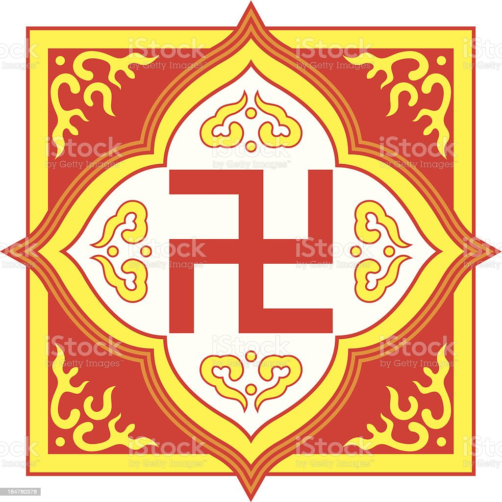

The Hindu caste system has four castes, or varnas, wich define the privleges and responsibilities that a person has in Hindu society. According to a Hindu book, the Rig Veda, the varnas came from the self sacrafice of Purush, the primal man, in order to create a human society in which his head became Brahmans, his hands; Kshatrias, his thighs; Vaishias, and his feet became Sudras. other religious theories say that the varnas originated from the organs of Brahma, a Hindu god.

In the Hindu caste system the caste that you are born into is the caste that you are in for life; it is possible to move through the castes, but only through reincarnation. Karma determines the caste that you are born into after you die; if you have good karma you gain a higher caste, and if you have bad karma you are reborn into a lower caste.